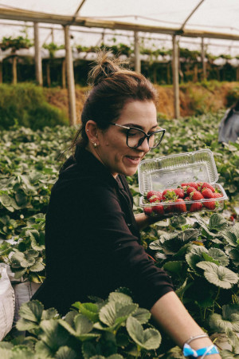

About Us
Lynch's Irish Strawberry Farm is a farm in the town of Clara, Co. Galway, in Ireland and is primarily used for the cultivation of strawberries. The farm is also open to tourism.
Background
The strawberry farm is owned and maintained by the Lynch Family. The farm land is made up of 79.49 hectares
(196.4
acres).
Strawberries are an important part of the local economy with the Strawberry Festival held in the town
every March.
Production
The average annual harvest of the farm as of 2018 is 1,775 metric tons (1,747 long tons; 1,957 short tons) harvested by 660 farmers.
Prices
A punnet of strawberries costs €5
